Wednesday, July 8: Arrival in Berlin
Evening — Arrival at Hauptbahnhof
South Exit
200m to Hotel
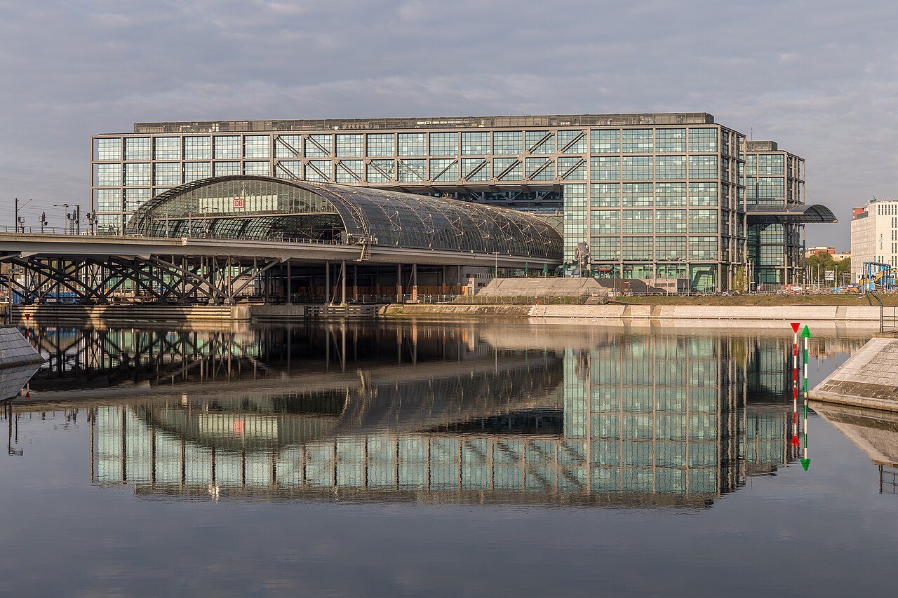
The EuroCity train from Warsaw pulls directly into Berlin Hauptbahnhof. Exit via the South Exit (Washingtonplatz). The IntercityHotel is less than 200 meters away.
📍 IntercityHotel on Maps
If You Need Cash on Arrival
Hauptbahnhof ATMs
There are ATMs inside Hauptbahnhof. Look for Deutsche Bank, Commerzbank, or Postbank machines (low or no fee). Avoid the orange and blue Euronet machines — they charge €5 to €6 per withdrawal. If asked about currency, always choose EUR, never your home currency.
Full cash and transit guidance is in the Tips section.
After Settling In — Brandenburg Gate at Dusk
~10 Min Walk
Flat & Pedestrian
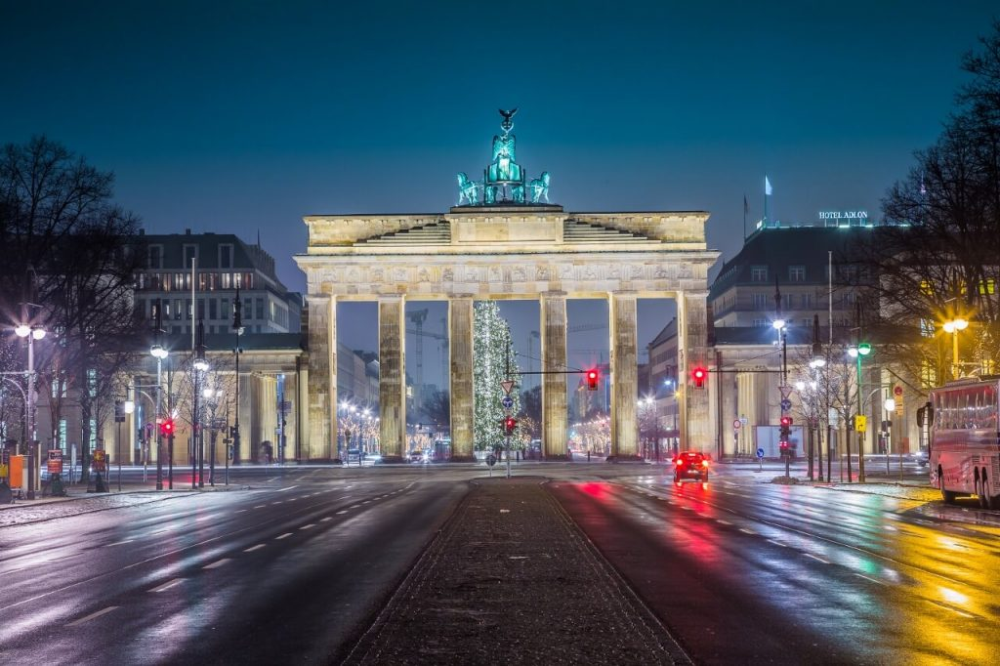
Walk south across the Moltkebrücke. In about ten minutes you reach the Reichstag, and a few minutes further you pass through Pariser Platz to the Brandenburg Gate.
Round trip is roughly 2.5 km, so plan rest stops at the Reichstag lawn or in Pariser Platz. If tired from the train, a taxi from the hotel to the Gate is under ten minutes and cheap — walk back toward the river to dinner at your own pace.
📍 Brandenburg Gate on Maps
Dinner — Zollpackhof
Classic Beer Garden
Riverside
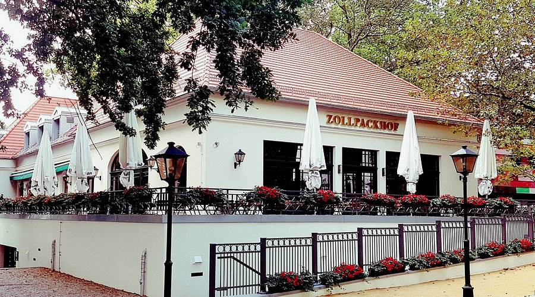
Across the river from the station — a classic German beer garden with riverside seating under chestnut trees. Casual, easy, and the right scale for a first night. About 5 minutes' walk from the hotel.
Elisabeth-Abegg-Straße 1. No reservation needed, but possible online.
📍 Zollpackhof on Maps
Thursday, July 9: Markets & Old Berlin
8:00 AM — Tiergarten in the Morning
Right Next to Hotel
Flat & Shaded

Tiergarten is right next to the hotel. Enter from the eastern edge near the Reichstag and find a shaded bench by the Spree or near the Neuer See. The light at this hour is the best of the day.
For breakfast: the hotel café works fine, or walk through the park to Café am Neuen See (opens 9:00, lakeside).
📍 Café am Neuen See on Maps
10:30 AM — S-Bahn to Hackescher Markt
~4 Min, Direct
S3 / S5 / S7 / S9
Two stops from Hauptbahnhof, about 4 minutes. The Thursday weekly market runs 9:00–18:00. It leans toward food and crafts (cheese, fish sandwiches, olives) more than souvenirs — the real souvenir gold is in the courtyards just off the square.
📍 Hackescher Markt on Maps
11:00 AM — Hackesche Höfe Courtyards
Souvenir Shopping
8 Interconnected Courtyards
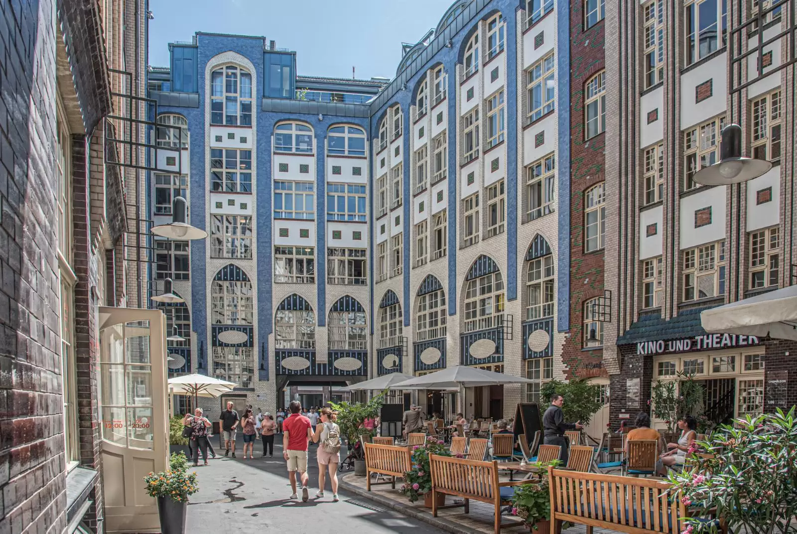
Beautiful Art Nouveau tilework. Eight interconnected courtyards full of shops:
🚦 Ampelmann Shop — iconic East Berlin pedestrian-light gifts
🎄 Käthe Wohlfahrt — German Christmas ornaments year-round
✨ Various small design boutiques across the courtyards
While Mom browses, Dad can rest at Monbijoupark right across the Spree — lovely views toward Museum Island, plenty of benches and shade.
📍 Hackesche Höfe on Maps
📍 Monbijoupark on Maps
1:00 PM — Lunch on Oranienburger Straße
Walk Past, Pick
A few minutes from the courtyards. Many restaurants line this street, so it's easy to walk past, read menus, and choose. Traditional German, Italian, light cafés. Hofbräu Wirtshaus is on this street if a sit-down German lunch sounds right.
📍 Oranienburger Straße on Maps
2:30 PM — Hotel Rest
Real Break
S-Bahn 4 Min
S-Bahn back to Hauptbahnhof (4 minutes). A real break here will protect the evening — jet lag is still in the picture.
5:30 PM — Taxi to Nikolaiviertel
~10 Min Taxi
Berlin's Old Quarter
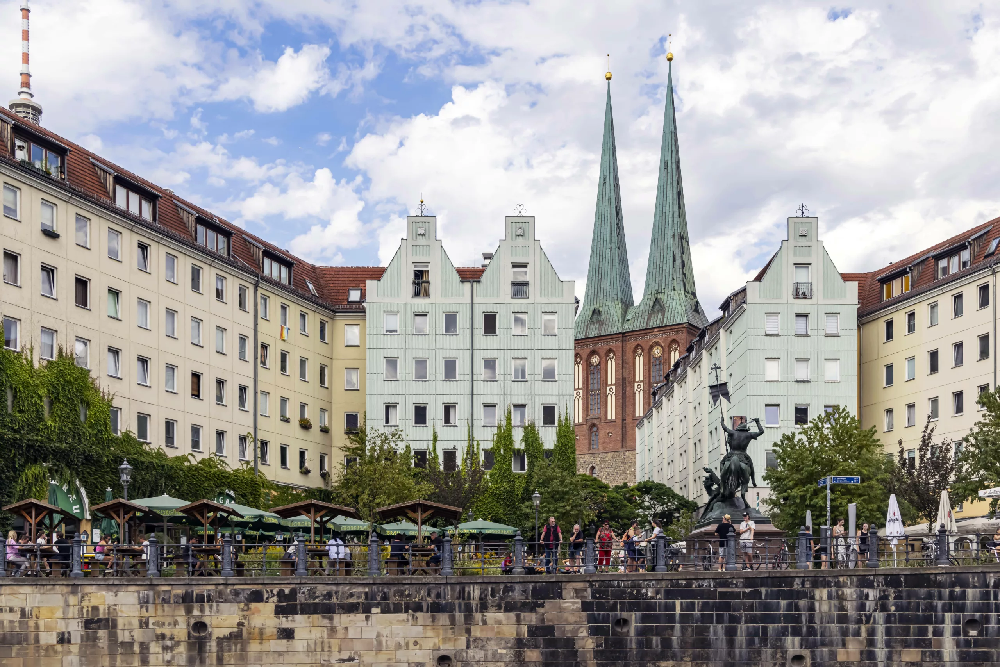
Berlin's reconstructed old quarter, best in the evening when crowds thin and the light is golden on the Spree. Take a taxi rather than the U-Bahn to save Dad's legs.
Cobblestone streets and traditional souvenir shops: nutcrackers, beer steins, Berlin Bear figurines. The riverbank has benches every few meters.
📍 Nikolaiviertel on Maps
7:30 PM — Dinner in Nikolaiviertel
Three Options Nearby
All three cluster within a few minutes' walk — you can read menus and pick:
🥨 Zum Nußbaum — classic old-Berlin tavern, traditional German fare
🍻 Zur Gerichtslaube — historic dining hall, hearty German
🍺 Brauhaus Georgbræu — Berlin brewery with a riverside terrace
📍 Zum Nußbaum on Maps
📍 Zur Gerichtslaube on Maps
📍 Brauhaus Georgbræu on Maps
Friday, July 10: The Spree by Boat
8:00 AM — Slow Morning
Optional: Reichstag Dome
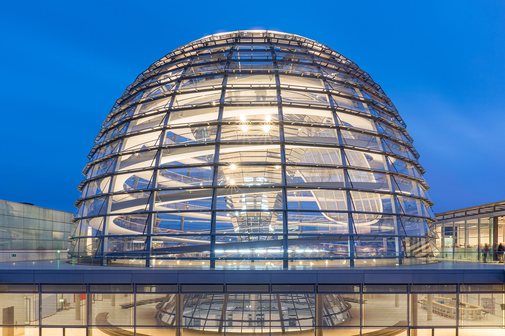
⚠️ Book in June Before You Go
The Reichstag dome visit is free but requires advance registration. Slots open about 2 months ahead and fill up fast. Skip the trip if not booked — it's optional.
→ Book Reichstag Dome Slot
If a dome slot is booked, this is the morning for it. Free, accessible by elevator, with one of the best views in Berlin. Morning slots are quieter.
If not booked, take a leisurely breakfast at the hotel café and a short walk along the Spree promenade.
📍 Reichstag on Maps
10:30 AM — To the Cruise Dock
Arrive 20–30 Min Early
Most sightseeing cruises depart from docks near Nikolaiviertel and Museum Island on the Spree. From Hauptbahnhof, take the S-Bahn to Hackescher Markt or Friedrichstraße, then walk to the dock.
⚠️ Build in extra time. Several reviews mention the docks can be tricky to find. Aim to arrive 20 to 30 minutes before departure.
12:00 PM — Spree Lunch Cruise
3.5 Hours
Meal Included
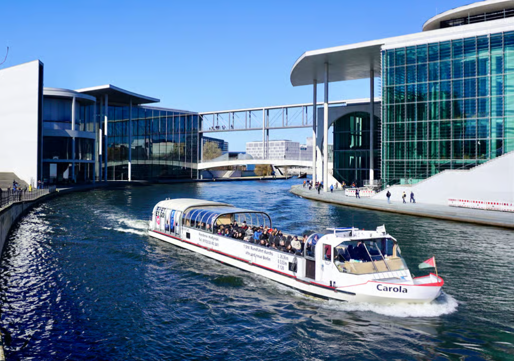
A 3 to 3.5 hour sightseeing cruise with a meal on board. From the water you'll see the Reichstag, government quarter, Museum Island, Berliner Dom, the TV Tower, and Bellevue Palace.
Two operator styles to consider:
🛳️ Stern und Kreis — the classic Berlin operator. Hot and cold food à la carte rather than fixed menu. More flexible.
🍽️ Prepaid lunch cruise via Viator or GetYourGuide. Fixed meal included, simpler arrangement.
Tip: Bring a light layer. Even in summer the breeze on the open deck can be cool. Arrive early to choose seating.
3:30 PM — Choose Your Own Afternoon
Energy Permitting
If feeling strong, especially if near Charlottenburg:
Stroll through Schloss Charlottenburg gardens. Formal baroque gardens, free to enter, plenty of benches, beautiful in July. You don't need the palace tour — the grounds alone are the point.
If tired:
Taxi or S-Bahn back to the hotel for a real rest. Lunch on a boat plus three hours on the water is plenty for one day.
📍 Charlottenburg Gardens on Maps
Evening — Light Dinner Near Hotel
Walking Distance
After lunch on the boat, dinner should be light and close:
🏛️ Paris-Moskau — historic restaurant in an 1898 half-timbered house, ~10 min walk. Traditional German-French menu, beautiful setting.
🍺 Zollpackhof again — if Wednesday's beer garden was a hit.
🛏️ Hotel restaurant or room service — genuinely fine if the day was long.
📍 Paris-Moskau on Maps
Saturday, July 11: Memorials & Museum Island
9:30 AM — Berlin Wall Memorial
S-Bahn to Nordbahnhof, ~5 Min
Free Outdoor Site
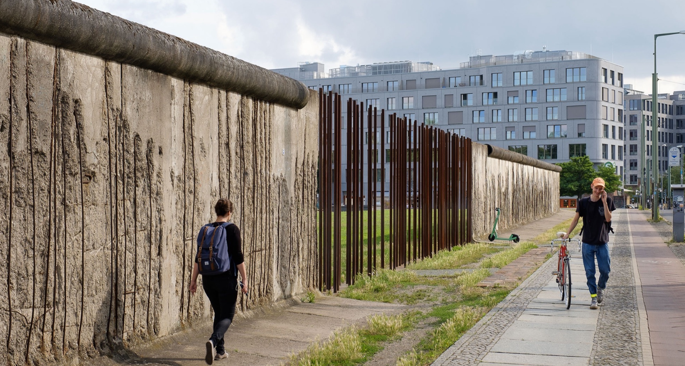
The Gedenkstätte Berliner Mauer on Bernauer Strasse is the most substantive Wall site in the city — original wall sections, the preserved "death strip," a watchtower, and a documentation center with exhibitions.
Allow 2 to 3 hours, but it's easy to stay shorter. The viewing tower has elevator access for an overhead sense of how the wall divided the city.
⚠️ This is emotionally heavy material. The open-air format lets you take it at your own pace, sit when needed, and step out anytime.
Plan B if heavy history feels like too much: Skip the Wall Memorial entirely and head straight to KaDeWe instead — Berlin's legendary luxury department store. The 6th-floor Feinschmeckeretage food hall is the showstopper: 110+ counters of chocolates, pastries, cheeses, oysters, cured meats from across Europe. Browse-able, plenty of seating, and a great way for Mom to find unique food souvenirs. U-Bahn U2 from Hauptbahnhof to Wittenbergplatz, ~15 min.
📍 Berlin Wall Memorial on Maps
📍 KaDeWe (Plan B) on Maps
12:30 PM — Lunch in Mitte
Flexible
S-Bahn one stop south to Friedrichstraße or Hackescher Markt. Plenty of options — and Mom already knows the area from Thursday.
2:00 PM — Museum Island & Antiques Market
Saturday Market
60+ Stands
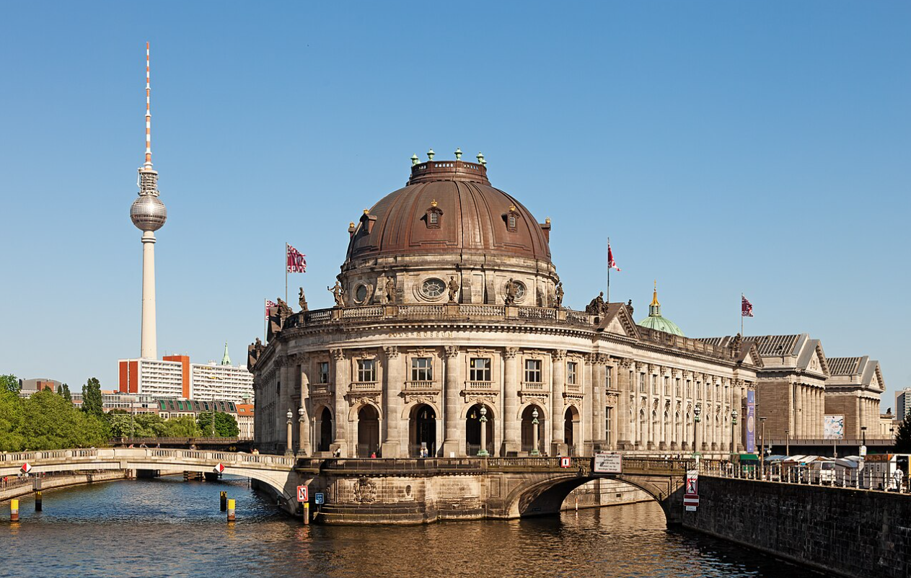
The antiques and book market behind the Bodemuseum runs Saturdays and Sundays — books, records, handicrafts, and small antiques. Set on the river, well away from the Unter den Linden crowds.
A perfect pairing: a market for Mom, a beautiful riverside setting for Dad.
📍 Bodemuseum on Maps
3:00 PM — Choose One Museum
Don't Try For More
🎨 Alte Nationalgalerie (recommended) — 19th-century European art: Caspar David Friedrich, Menzel, French Impressionists, German Romantics. A pure art museum experience in a gorgeous building.
🗿 Neues Museum (alternative) — home of the famous Nefertiti bust and ancient Egyptian art. Very manageable in 90 minutes.
📍 Alte Nationalgalerie on Maps
📍 Neues Museum on Maps
4:30 PM — Gendarmenmarkt
10 Min Walk
Berlin's Prettiest Square
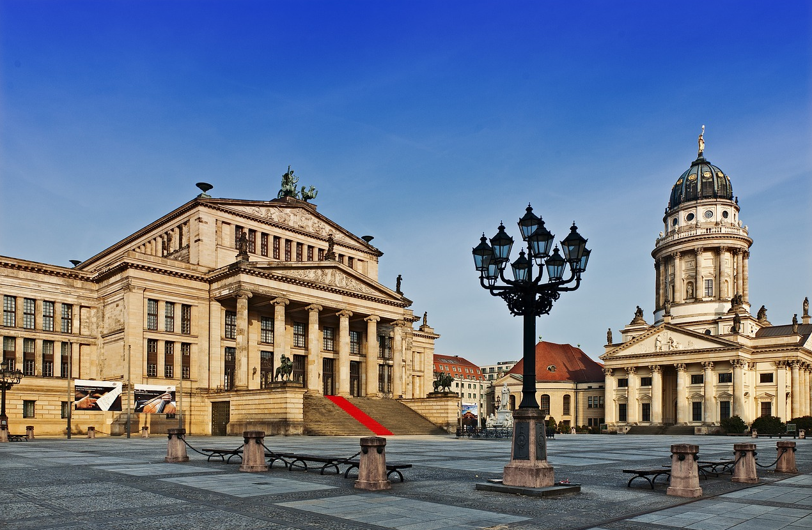
A ten-minute walk south across the Spree. Widely considered Berlin's most beautiful square, anchored by the Konzerthaus flanked by the matching Französischer Dom and Deutscher Dom.
Plenty of benches and café tables along the edges — the perfect place to rest after Museum Island. Try an Aperol or coffee at one of the cafés on the square and watch the light change.
📍 Gendarmenmarkt on Maps
Evening — Dinner at Gendarmenmarkt
Stay on the Square
🥩 Lutter & Wegner (recommended) — historic Berlin institution, right on the square. Traditional German with white-tablecloth feel. Walk a few meters from the cafés and you're at dinner.
🌇 Käfer Dachgarten on the Reichstag rooftop — special-evening view, requires advance booking (no security wait for restaurant guests).
🛏️ Back near the hotel if energy is low — easy S-Bahn ride.
📍 Lutter & Wegner on Maps
Sunday, July 12: Flea Markets & the Wall
10:00 AM — Mauerpark Flea Market
Sundays Only
Cash Only
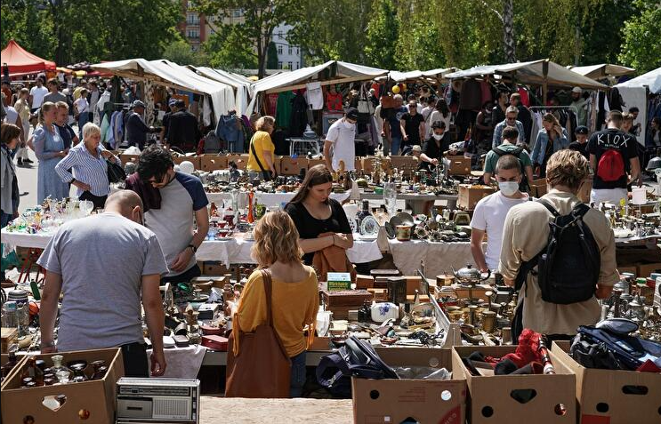
⚠️ Hit an ATM Saturday Evening
Many flea market vendors don't take cards. Withdraw cash before bed Saturday so you're not scrambling Sunday morning.
Sunday is Mauerpark day. The market runs 10:00–18:00, but arriving close to opening beats the heat and the worst crowds. Tram or S-Bahn from Hauptbahnhof, roughly 20 minutes.
Vendors spread across more than 7,000 sq m: vintage clothing, vinyl, GDR memorabilia, eclectic furniture, jewelry, handmade goods. The market sits on the former "death strip" of the Berlin Wall, which gives the surrounding park an unusual feel.
Dad can rest at any food stall or café along Oderberger Strasse next to the park.
📍 Mauerpark on Maps
1:00 PM — Lunch in Prenzlauer Berg
Walk Past, Pick
The streets just south of Mauerpark — particularly Kastanienallee and Oderberger Strasse — are café-heavy and exactly the "walk past, read menus, pick" format Mom likes. Lots of outdoor seating in July.
📍 Kastanienallee on Maps
3:00 PM — East Side Gallery
1.3 km Open-Air
Tram or U-Bahn
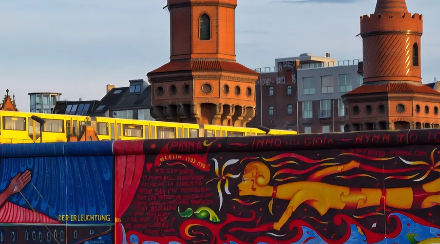
Tram or U-Bahn to Warschauer Strasse or Ostbahnhof. The East Side Gallery is the longest preserved stretch of the Berlin Wall: 1.3 km painted by artists in 1990. Outdoor, flat, runs along the Spree.
You don't need to walk the whole length. Even twenty minutes captures the iconic murals — the Brezhnev-Honecker kiss, the Trabant breaking through the wall. Benches and a riverside promenade for breaks.
Plan B if Wall sites feel like too much: Head to the Botanischer Garten Berlin instead — one of the largest and most beautiful botanical gardens in the world. 22,000 plant species across 43 hectares, plus historic glasshouses including the Great Tropical House. Mostly flat paths, abundant benches, and a perfect rest day for Dad. S-Bahn S1 to Botanischer Garten station, ~30 min from central Berlin.
📍 East Side Gallery on Maps
📍 Botanischer Garten (Plan B) on Maps
4:30 PM — Bonus: Oberbaumbrücke
If Energy Holds
Lovely Photo Stop
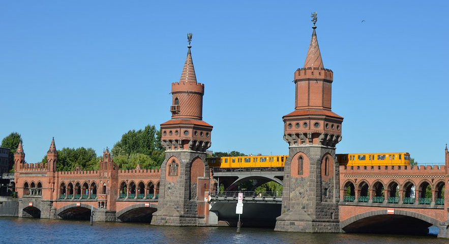
A beautiful brick double-deck bridge right at the end of the gallery. A lovely crossing back into Kreuzberg, perfect for photos.
📍 Oberbaumbrücke on Maps
Evening — Farewell Dinner
Last Night
Three options for a send-off:
🍻 Hofbräu Berlin near Alexanderplatz — big Bavarian beer hall, lively and traditional. Easy to sit, easy menu, classic German farewell.
🥩 Lutter & Wegner on Gendarmenmarkt — if not done Saturday. Historic Berlin institution, beautiful square.
🌳 Zollpackhof again — walking distance from the hotel. The simplest possible last night.
Pack tonight if possible. Flight is Monday.
📍 Hofbräu Berlin on Maps
Monday, July 13: Departure
Morning — Breakfast Options
Easy & Close
Last morning before the flight. Keep it close to the hotel so there's no stress about timing.
☕ Hotel breakfast — the simplest choice. If included in the room, take advantage of it on the last morning.
🥐 Café in Hauptbahnhof — the station itself has several cafés and bakeries open early. Le Crobag for French-style pastries and coffee, or Kamps for traditional German bakery items. Open by 6:00 AM. Convenient if you're already heading to the train platforms.
🍳 Benedict Berlin (10 min walk or short taxi) — Berlin's most-loved all-day breakfast spot. International menu with shakshuka, eggs Benedict, pancakes. Opens at 8:00 AM. A real sit-down send-off meal if there's time.
📍 Benedict Berlin on Maps
To the Airport — FEX from Hauptbahnhof
23 Min Direct
4 Trains Per Hour
⚠️ Buy an ABC Ticket, Not AB
The airport is in Zone C. A standard AB ticket won't cover the trip. Buy an ABC single ticket (~€5) at any yellow ticket machine in Hauptbahnhof or via the BVG app. Validate paper tickets at the yellow/red stamping boxes before boarding.
The FEX (Flughafen-Express) is the easiest way to the airport. Four trains per hour, 23 minutes direct from Hauptbahnhof to Flughafen BER, no transfers. Runs from 4:00 AM to 1:00 AM.
How to find it at Hauptbahnhof: The FEX departs from the lower-level regional train platforms (Gleis 1–8). Check the departure boards for "FEX" or "Flughafen BER." Allow extra time since Hauptbahnhof is large.
Timing rule of thumb: For an international flight, aim to be at BER about 2.5 hours before departure. Add the 23-minute train ride plus ~15 minutes of buffer at Hauptbahnhof. So leaving the hotel about 3 hours and 15 minutes before the flight is comfortable.
📍 Berlin Hauptbahnhof on Maps
Plan B — Taxi to BER
~€50–€70
30–45 Min
If carrying lots of luggage or the timing is tight, a taxi from the hotel to BER runs about €50–€70 and takes 30–45 minutes depending on traffic. Door-to-door, no stairs, no platform-hunting.
Use FreeNow, Bolt, or Uber apps, or have the hotel front desk call a taxi for you. Ask for a quote upfront if possible.
At BER — Terminal 1 vs Terminal 2
Check Your Ticket
The FEX arrives at the Flughafen BER station on level U2, directly under Terminal 1.
✈️ Terminal 1: Just a few minutes' walk from the train platform up to the check-in hall.
✈️ Terminal 2: Go up to arrivals level E0 and follow the signs. About a 10-minute walk.
Most US flights depart from Terminal 1, but check the boarding pass to confirm.
Last Souvenirs
If Time Allows
Both terminals have shops airside (after security). Look for:
🍫 Ritter Sport — the iconic square German chocolate, often with airport-exclusive flavors
🥨 Lebkuchen / German cookies — Bahlsen and other brands at most newsstands
🐻 Berlin Bear merchandise — small souvenirs at gift shops if anything was missed in town
Prices are slightly marked up versus city shops, but it's a fine last chance for chocolate to bring home.
Safe Travels! ✈️
Tschüss, Berlin. Until next time.
Logistics & Tips
Before You Go · Book in June
- Reichstag dome slot at bundestag.de — free, slots open ~2 months ahead
- Friday lunch cruise on the Spree — at least 1–2 weeks ahead for peak July
- Museum Island ticket for Saturday (Alte Nationalgalerie or Neues Museum)
- Confirm ATM cards work internationally and have a 4-digit PIN
- Download BVG Fahrinfo app for transit, and offline Google Maps for Berlin
Getting Cash · ATMs in Berlin
Germany still runs heavily on cash. Many flea markets, smaller cafés, and street food vendors don't take cards. Plan to withdraw euros within the first day.
Use these banks (low or no fee for foreign cards)
- Deutsche Bank, Commerzbank, Postbank, Sparkasse — major German banks, ATMs everywhere
- The closest ATMs to the hotel are inside Hauptbahnhof or on Invalidenstraße. Ask the front desk.
Avoid these
- Euronet — orange and blue freestanding machines, €5–6 fee per withdrawal
- Reisebank currency exchange counters — convenient but unfavorable rates
At the ATM
- If asked "Charge in EUR or your home currency?" — always choose EUR
- Withdraw a larger amount once rather than several small ones (flat fees add up)
- German for ATM: Geldautomat. Useful in Google Maps.
Public Transit · BVG & S-Bahn
Berlin's transit is excellent and step-free in most central stations. Trains, buses, and trams share tickets within the same zone.
Which zone
Everything on this itinerary is in Zone AB. Zone ABC is only needed for the airport (BER) or Potsdam.
Which ticket
- 24-hour ticket (Tageskarte) AB — ~€9.80, unlimited rides. Best choice most days.
- Berlin WelcomeCard AB — combines transit with 25–50% discounts at attractions
- Single ticket AB — ~€4, one-off trips only
How to buy
- Yellow ticket machines on every U-Bahn and S-Bahn platform. Has English mode.
- BVG Fahrinfo app sells digital tickets that activate immediately (no validation needed).
- Buses sell single tickets from the driver, contactless only.
⚠️ Crucial
Paper tickets must be validated by stamping in the small yellow/red boxes on the platform before boarding. Fine for unstamped ticket is €60 and inspectors are strict. Digital and pre-purchased day tickets are usually pre-validated — check the printed time.
Taxis & Rideshare
- Uber, Bolt, FreeNow all work in Berlin. FreeNow is the most common local app.
- For trips under 2 km, tell the driver "Kurzstrecke" for a flat short-fare rate (~€6).
- Taxis are easy to find at any major station and reasonably priced.
Tipping
- Restaurants: round up or add 5–10%. When paying, tell the server the total amount (e.g., for a €27 bill, say "30"). Don't leave cash on the table.
- Taxis: round up to the nearest euro or two.
- Hotel housekeeping: €1–2 per day is generous.
Useful German
- Guten Tag · hello (formal, daytime)
- Danke · thank you
- Bitte · please / you're welcome
- Entschuldigung · excuse me / sorry
- Die Rechnung, bitte · the check, please
- Sprechen Sie Englisch? · do you speak English?
Practical Notes
- Sundays: regular shops are closed. Markets, restaurants, cafés, and tourist sites stay open. Plan grocery runs for Saturday.
- Weather: July averages ~25°C / 77°F daytime, cooler evenings. Pack layers. Afternoon rain showers happen — a small umbrella is wise.
- Water: tap water is excellent. Restaurants will ask "Stilles Wasser oder mit Kohlensäure?" (still or sparkling).
- Walking: Berlin pavements are mostly flat but cobblestone in older areas (Nikolaiviertel, parts of Hackescher Markt). Comfortable shoes matter.
- Emergencies: 112 for all emergencies (medical, fire, police).
If Plans Slip
This itinerary has real breathing room built in. If a morning runs long or an afternoon nap stretches past 4 PM, the next item can almost always move to the next day. The only timing-sensitive things are the Reichstag dome slot (if booked) and the Friday cruise. Everything else flexes.